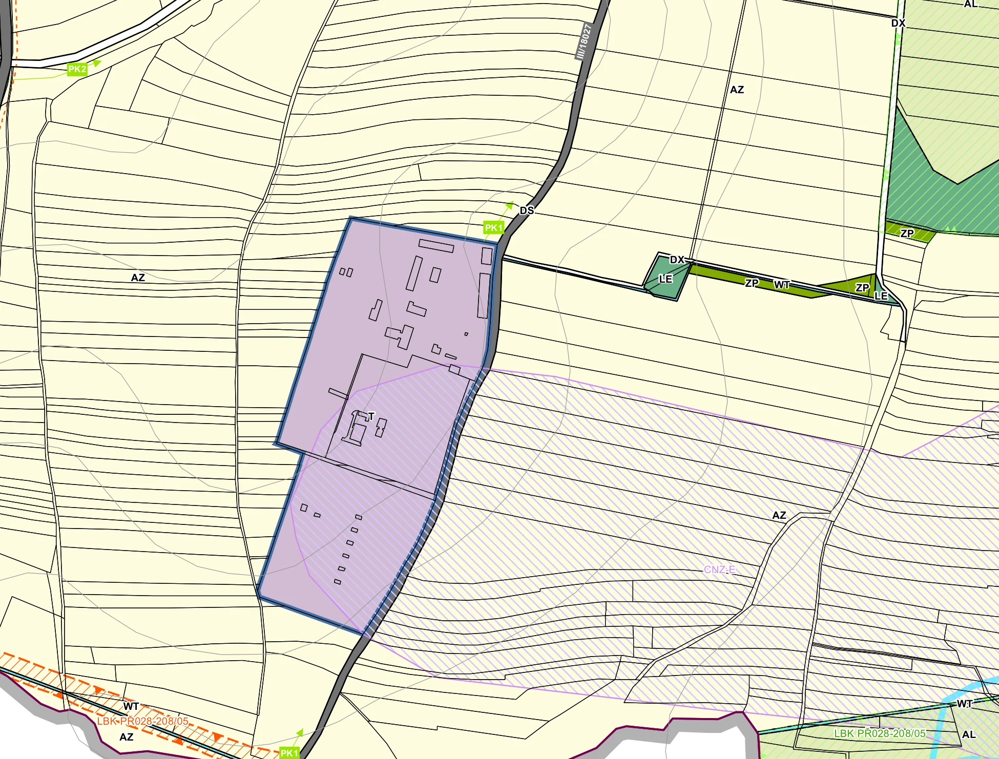
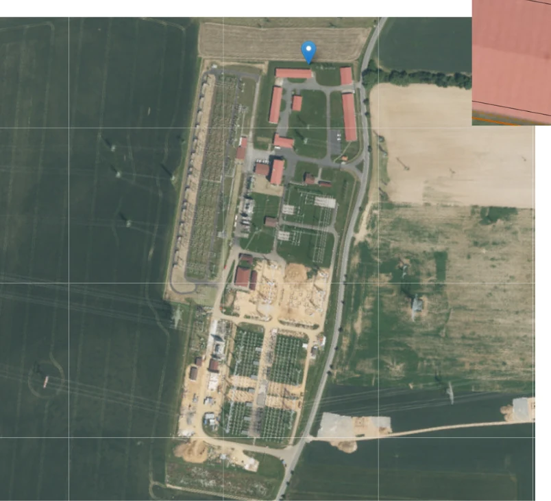
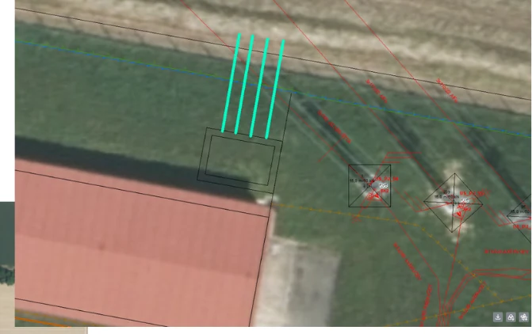
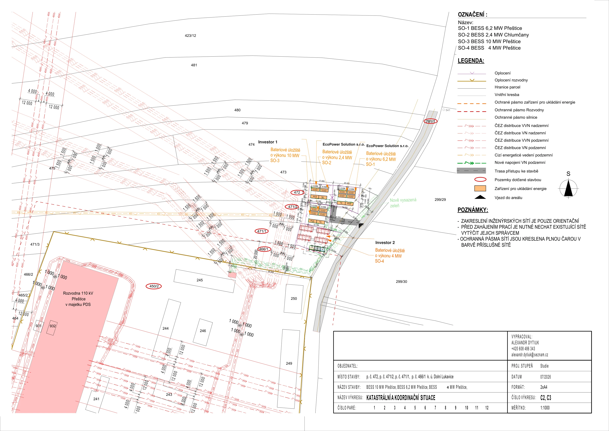

Přeštice — bateriové úložiště 8,6 MW
Projekt disponuje dvěma smlouvami o připojení s celkovým výkonem 8,6 MW. V lokalitě získaly připojovací kapacitu tři subjekty, projekt proto připravujeme jako součást většího bateriového a technologického parku. Koordinovaná příprava umožňuje sdílet část technických a infrastrukturních nákladů — přístupové komunikace, kabelové trasy, výkopové práce a související infrastrukturu.
- Rezervovaný výkon
- 8,6MW
- Akviziční cena
- 30 100 000 KčKč
- Kabelová trasa
- 108m
- Stavební povolení
- 4Q/2026 až 1Q/2027
Přednosti projektu
Součást koordinovaného bateriového parku o celkovém výkonu 22,6 MW.
- 01Dvě smlouvy o připojení v jednom areálu — 6,2 MW a 2,4 MW.
- 02Klíčové majetkoprávní vztahy se všemi dotčenými vlastníky jsou dojednány.
- 03Sdílení nákladů na infrastrukturu v rámci parku 22,6 MW.
- 04Krátká kabelová trasa 108 m do areálu transformovny Přeštice.
Parametry
Základní parametry projektu
- Rezervovaný výkon8,6 MW
- Rezervovaný příkon8,6 MW
- Napěťová hladina22 kV
- Počet smluv o připojení2 — Přeštice I. (6,2 MW) a Přeštice II. Chlumčany (2,4 MW)
- Délka kabelové trasy VN108 m
Územní plán
Soulad s územně plánovací dokumentací

ZvětšitVýřez z hlavního výkresu Územního plánu Dolní Lukavice (2022). Areál rozvodny Přeštice je vymezen jako stabilizovaná plocha technické infrastruktury; územní plán ukládá tento solitérní areál v jihozápadní části území stabilizovat. Částí území prochází překryvný koridor CNZ-E pro zdvojení vedení ZVN 400 kV, jehož podmínky umístění staveb nevylučují — záměr nesmí ztížit realizaci vedení.
- TPlocha technické infrastruktury — areál rozvodny Přeštice, stabilizovaná
- AZPlochy zemědělské — pozemek záměru, BPEJ 4.26.01, půda III. třídy ochrany
- CNZ-EPřekryvný koridor pro zdvojení vedení ZVN 400 kV (E09, E20)
Záměr navazuje na stabilizovaný areál rozvodny Přeštice. Bateriové úložiště je umisťováno na zemědělské půdě III. třídy ochrany (BPEJ 4.26.01), u které lze zábor ZPF povolit formou výjimky.
Přípojný bod
Přípojný bod v distribuční soustavě
Projekt je řešen přes předávací stanici ČEZ Distribuce na pozemku parc. č. 450/2 v k. ú. Dolní Lukavice, s napojením zákaznického kabelového vedení do zařízení VN 22 kV v souladu se smlouvou budoucí o připojení. Kabelová trasa je vedena z předávací stanice nejkratší možnou trasou s kolmým křížením oplocení rozvodny; v ochranném pásmu elektrické stanice (min. 20 m od oplocení) nebudou umístěny stavby ani nadzemní části komunikací.

Zvětšit
ZvětšitSituace
Katastrální a koordinační situace
Kabelové vedení 22 kV uložené v zemi přes pozemky parc. č. 472, 471/2 a 450/2 v k. ú. Dolní Lukavice.

ZvětšitMajetkoprávní zajištění
- Pozemek pro umístění BESS
- parc. č. 472, k. ú. Dolní Lukavice — zajištěn nájemní smlouvou na 20 let
- Kabelová trasa VN
- zajištěna smlouvami o smlouvách budoucích na zřízení služebnosti inženýrské sítě se všemi dotčenými vlastníky
- Dotčení vlastníci
- klíčové majetkoprávní vztahy jsou dojednány se všemi
Přístup a dopravní napojení
Dopravní napojení přes komunikaci parc. č. 781/1 a dále po pozemku parc. č. 472.
Harmonogram a cena
Harmonogram a cena
Termíny označené jako předpoklad vycházejí z aktuálního stavu povolovacích řízení.
Harmonogram projektu
- Smlouvy o připojení (2×)uzavřeny
- Umístění BESSpozemky pronajaty na dobu 20 let
- Kabelová trasamajetkoprávně zajištěna služebností inženýrské sítě zapsanou v katastru nemovitostí
- Koordinační situace a prověření inženýrských sítídokončeno 07/2026
- Zpracování projektové dokumentacezahájeno 08/2026
- Dokončení dokumentace pro povolení záměru09/2026 (předpoklad)
- Rozeslání dokumentace dotčeným orgánům09–10/2026 (předpoklad)
- Stanoviska orgánů a podání žádosti o povolení10–12/2026 (předpoklad)
- Vydání stavebního povolení / povolení záměru4Q/2026 až 1Q/2027 (předpoklad)
- Realizace stavby a připojení k distribuční soustavě2Q/2028 (předpoklad)
Komerční parametry
- Investiční poplatek za připojení (celkem)
- 3 276 400 Kč
- Z toho již uhrazeno
- 1 638 200 Kč
- Zbývá k úhradě
- 1 638 200 Kč
- Nájemné za pozemek
- 48 837 Kč / MW / rok
- Nájemné za pozemek celkem
- 419 998 Kč / rok
- Akviziční cena za 1 MW
- 3 500 000 Kč
- Akviziční cena projektu
- 30 100 000 Kč
Uvedené hodnoty jsou orientační a nepředstavují nabídku ve smyslu § 1732 občanského zákoníku.
Dokumentace
Podklady k projektu
Kontakt
Rádi vám projekty představíme podrobněji
Navrhujeme krátkou úvodní schůzku, na které vám jednotlivé projekty představíme a zodpovíme případné dotazy. K dispozici jsou podrobnější technické, majetkoprávní i ekonomické podklady. V případě potřeby zajistíme také jednání s projektanty a inženýry, kteří zajišťují přípravu stavebních povolení.